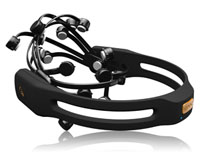
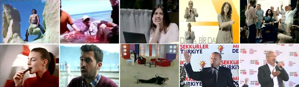

Emotiv Epoc ile duygusal uyarımların hatırlamaya etkisinin gözlenmesine yönelik bir çalışma
March 1, 2012 Geçen dönem Emotiv Epoc neuroheadset ile ufak bir çalışma yapma fırsatım oldu. Aynı zamanda bir oyun kontrolörü olan bu cihaz ile kullanıcılardan kolaylıkla 14-kanallı EEG verisi toplanabiliyor. Ham EEG verisinin ölçümünün yanısıra cihaz kullanıcıların heyecan, gerilim ve ilgi gibi duygularının seviyeleri hakkında da tahminde bulunabiliyor. Bu gibi veriler oyunlarda kullanıcının oyunun zorluğundan veya kolaylığından sıkılıp sıkılmadığını tespit ederek zorluk seviyesinin dinamik olarak ayarlanması gibi uygulamalarda da kullanılabiliyor.
Bizim projemizde ise 14 kişiden oluşan bir deney grubuna reklam, film, belgesel ve politik mitinglerden sahneler gibi kesitlerden oluşan bir video izletirken Emotiv Epoc ile duygusal uyarım seviyelerini ölçtük ve deneyden bir hafta sonra videodaki hangi sahneleri hatırladıklarını sorduk. Katılımcıların deney sırasında daha sonra video ile ilgili sorular sorulacağından haberi yoktu. Ayrıca, video kesitlerinin uzunlukları eşit olmadığından ve uzun olan sahnelerin hatırlanma eğilimi daha yüksek olacağından sahnelerin uzunluklarına bir sınırlama getirdik. Örneğin "bir politikacının konuştuğunu hatırlıyorum" gibi geri bildirimleri değerlendirmeye almazken, "...'nın mitingde ... dediği sahneyi hatırlıyorum" şeklindeki geribildirimleri değerlendirdik.
Video kolajında en çok hatırlanan sahnelerden bazıları:

Deneyin ikinci aşamasında ise en çok hatırlanan sahnelerde farklı duygular için duygusal yükselişler olup olmadığını gözlemledik. Her katılımcı için kaydettiğimiz duygu verisinin ortalamasını alıp elde edilen sinyallere belirli filtreler uyguladıktan sonra video boyunca genel duygusal değişimler hakkında fikir sahibi olmamıza olanak sağlayan sinyaller elde ettik. Aşağıdaki tablo en çok hatırlanan sahneleri, hatırlanma oranlarını ve sahnelere karşılık gelen sinyallerde yerel maksimum bulunup bulunmadığını göstermektedir.
| Sahne Etiketi | Hatırlanma Oranı | Heyecan | İlgi | Gerilim |
| S2 | %79 | - | + | + |
| S3 | %36 | + | + | + |
| S11 | %36 | + | + | + |
| S9 | %29 | + | + | + |
| S1 | %29 | + | + | - |
| S6 | %21 | - | + | - |
| S7 | %21 | + | + | + |
| S4 | %14 | + | + | + |
| S5 | %14 | - | + | - |
| S8 | %14 | + | - | - |
| S10 | %14 | + | + | + |
Deneyimizde en çok hatırlanan sahne (S2) gerilim seviyesinin yüksek olduğu (köpekbalığı saldırısı) bir belgesel sahnesi oldu. Her ne kadar elimizdeki küçük veri seti ile genel bir sonuca varmak mümkün olmasa da sonuçlardan genel olarak hatırlanma oranı yüksek olan sahnelere karşılık gelen zaman aralığındaki ilgi seviyesinin yüksek olduğunu ve en az bir yerel maksimum noktasının mevcut olduğunu gözlemledik.